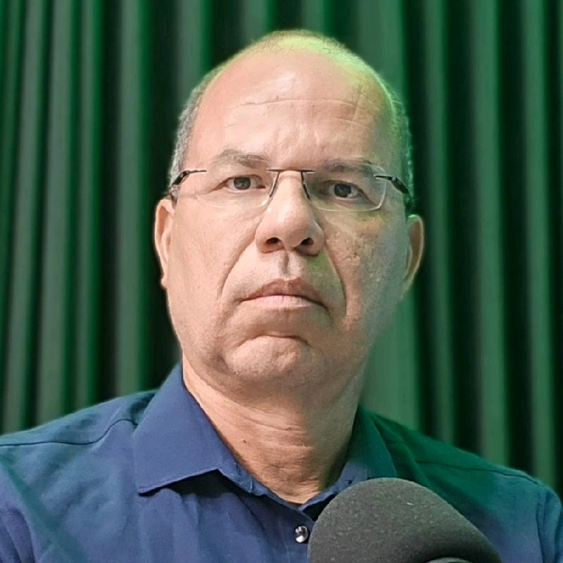
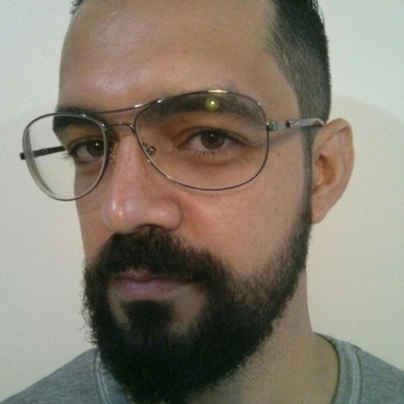
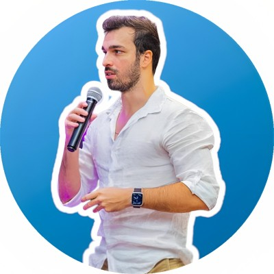
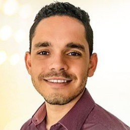

01
Quadro de Convergência
Organize problema, usuários, evidências, proposta de valor e rota.
Transforme oportunidades do ensino, da pesquisa, da extensão, da assistência e da gestão em soluções reais, com IA generativa responsável, equidade e orientação prática.
“Tenho uma prática, uma pesquisa, uma ação de extensão, um desafio assistencial ou uma ação de gestão. Isso pode virar inovação?”
Se você reconhece uma necessidade real, esta oficina ajuda a construir o próximo passo.Você aprenderá a decidir se o melhor caminho é uma melhoria institucional, projeto de ensino ou extensão, tecnologia social, produto, serviço, licenciamento ou startup.
Identifique oportunidades que nascem no ensino, na pesquisa, na extensão e nas demandas da comunidade ou na assistência.
Compreenda usuários, evidências, barreiras de acesso e necessidades ainda não atendidas.
Considere viabilidade, ética, regulação, propriedade intelectual, equidade e impacto social.
Você sai com ferramentas para transformar uma oportunidade em próximos passos claros, responsáveis e possíveis.
Organize problema, usuários, evidências, proposta de valor e rota.
Identifique benefícios, exclusões e barreiras de acesso.
Explore alternativas e identifique vieses antes de decidir.
Escolha o que testar, proteger ou articular primeiro.
Na prática, você usará IA generativa para comparar formulações do problema e explorar alternativas de solução. Depois, avaliará evidências, vieses, segurança, viabilidade, acessibilidade e equidade.
Entenda como ensino, pesquisa, extensão, assistência e gestão podem originar oportunidades — e como escolher a rota adequada entre melhoria institucional, tecnologia social, licenciamento e empresa nascente, com IA crítica e equidade.
Casos documentados e desafios aplicados mostram que a inovação universitária pode nascer em qualquer campo da instituição.
Da iniciação científica em um laboratório universitário a uma startup de saúde baseada na biodiversidade brasileira.
Fonte: UFJF ↗Um projeto de extensão em Alagoas transformado em produto para crianças e adolescentes hospitalizados.
Fonte: UFAL ↗Como uma experiência de aprendizagem pode se tornar uma solução educacional replicável, acessível e sustentável.
Fonte: Whitebook · Projeto Draft ↗Como fluxos, dados e necessidades dos serviços de saúde podem revelar oportunidades de inovação e empreendedorismo assistencial.
Fonte: Fecha Feridas ↗Como o diploma digital pode modernizar emissão, registro, validação e acesso a documentos acadêmicos, reduzindo tempo, custos e riscos de fraude.
Fonte: UNCISAL ↗Terça-feira · 22 de setembro de 2026 · 14h às 17h
Diagnóstico inicial e rotas de oportunidades do ensino, pesquisa, extensão e demandas da comunidade e assistência.
Comparação de problemas e alternativas, com análise de evidências, vieses, barreiras, segurança e acessibilidade.
Quadro de Convergência, Matriz de Equidade, sínteses de um minuto, devolutivas e primeiro movimento de cada proposta.
Docentes, estudantes de graduação e pós-graduação, profissionais da assistência e servidores técnico-administrativos da UNCISAL interessados em transformar experiências de ensino, resultados de pesquisa, ações de extensão ou desafios assistenciais e de gestão em soluções inovadoras. Não é necessário entender de negócios ou inteligência artificial.
Cinco facilitadores reunindo experiências da UNCISAL, TransformeTech e IEBT.

Professor da UNCISAL. Conduzirá a integração entre os cinco campos universitários e a estruturação das oportunidades de inovação.
Perfil no LinkedIn
Servidor da UNCISAL. Conduzirá a análise das propostas e o planejamento da jornada do empreendedor.
Perfil no LinkedInProfessor da UNCISAL. Conduzirá a simulação para o treinamento em empreendedorismo.
Perfil no LinkedIn
Facilitador da TransformeTech. Conduzirá a reflexão sobre o gap entre a universidade e a indústria.
Perfil no LinkedIn
Facilitador do IEBT. Conduzirá a reflexão sobre a importância da cultura do empreendedorismo na universidade.
Perfil no LinkedInNão. Você pode trabalhar com ensino, pesquisa, extensão e demandas da comunidade, assistência ou um caso hipotético.
Não. Equipamentos são opcionais; haverá material impresso e exemplos preparados.
Quadro de Convergência, Matriz de Equidade, síntese de um minuto e próximos passos.
Presencialmente na UNCISAL, durante o 16º CACUN.
Transforme uma oportunidade universitária em uma rota de inovação com propósito, equidade e impacto.
Quero garantir minha vaga